カードの意味
タロットカード78枚の意味
大アルカナ22枚と小アルカナ56枚。それぞれのカードの正位置・逆位置の意味を、恋愛・人間関係・仕事・お金・生活・今日の運勢に分けて、やさしい言葉でまとめました。
大アルカナ
22枚の大アルカナは、人生の大きなテーマや転機を表すカードです。0番の「愚者」から21番の「世界」まで、一人の旅人が成長していく物語として読むこともできます。
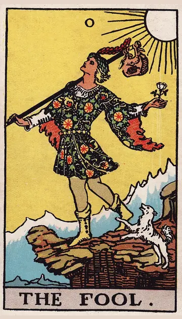
愚者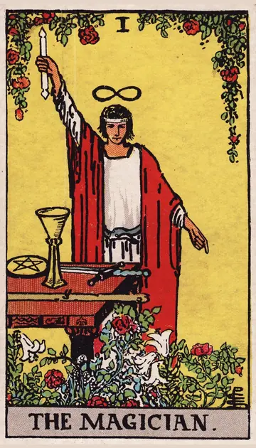
魔術師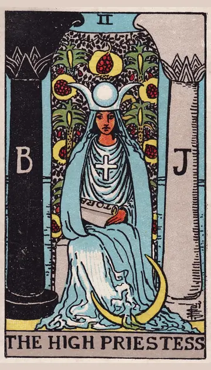
女教皇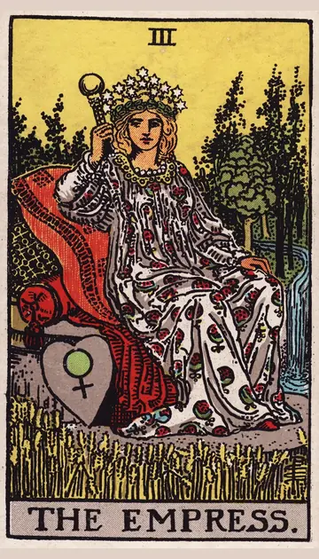
女帝 皇帝
皇帝 教皇
教皇 恋人
恋人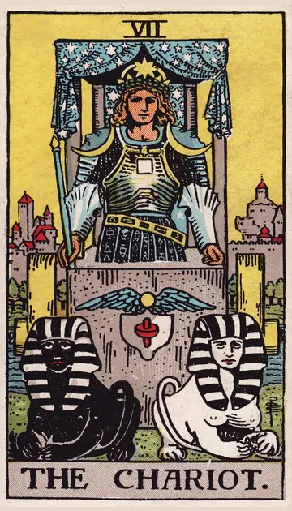
戦車 力
力 隠者
隠者 運命の輪
運命の輪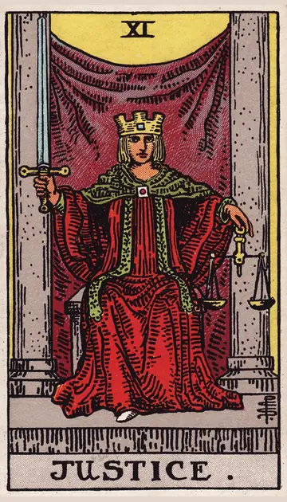
正義 吊るされた男
吊るされた男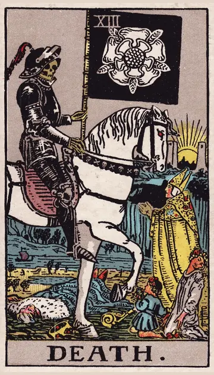
死神 節制
節制 悪魔
悪魔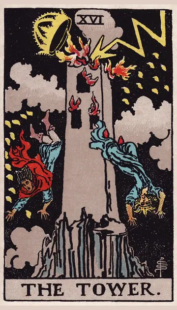
塔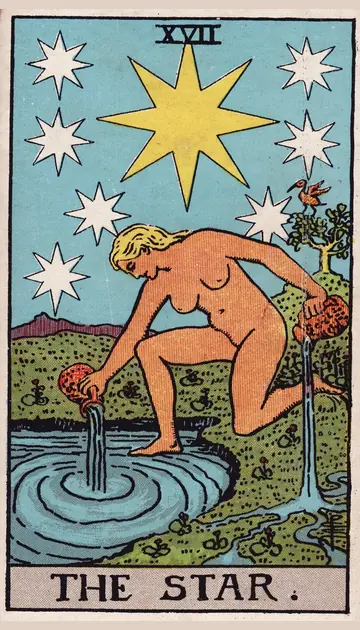
星 月
月 太陽
太陽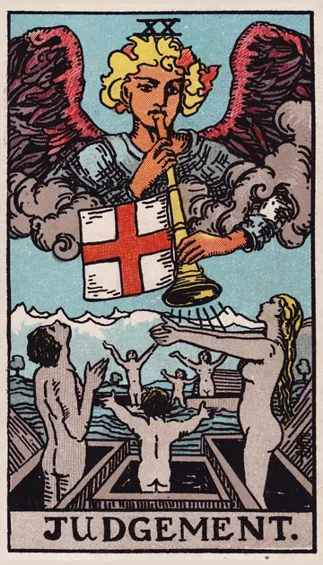
審判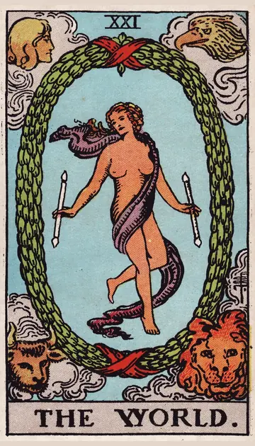
世界ワンド
ワンド（棒）は、火のエレメントに対応するとされ、情熱・やる気・行動・始めることを表します。
 ワンドのエース
ワンドのエース ワンドの2
ワンドの2 ワンドの3
ワンドの3 ワンドの4
ワンドの4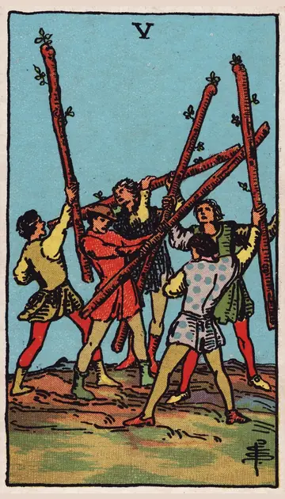
ワンドの5 ワンドの6
ワンドの6 ワンドの7
ワンドの7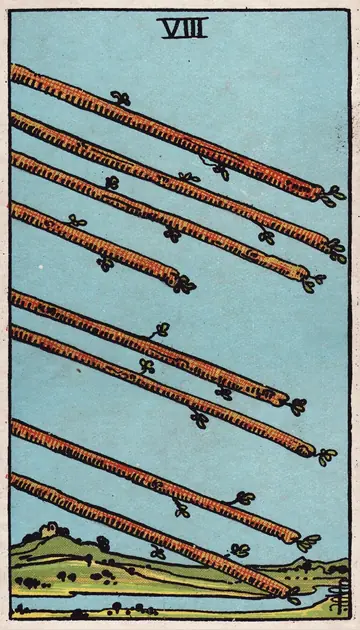
ワンドの8 ワンドの9
ワンドの9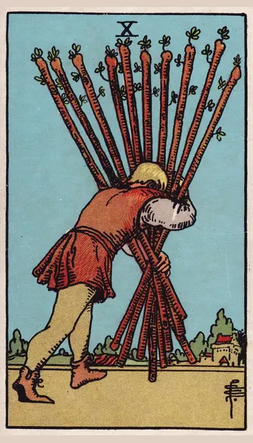
ワンドの10 ワンドのペイジ
ワンドのペイジ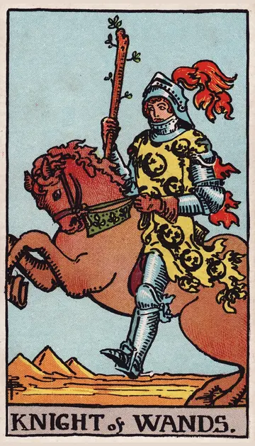
ワンドのナイト ワンドのクイーン
ワンドのクイーン ワンドのキング
ワンドのキングカップ
カップ（杯）は、水のエレメントに対応するとされ、気持ち・愛情・人とのつながりを表します。
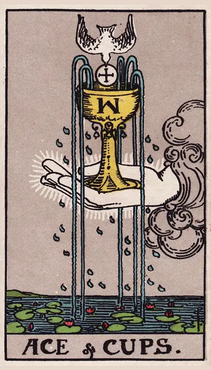
カップのエース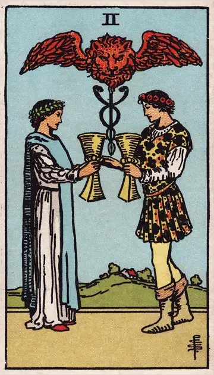
カップの2 カップの3
カップの3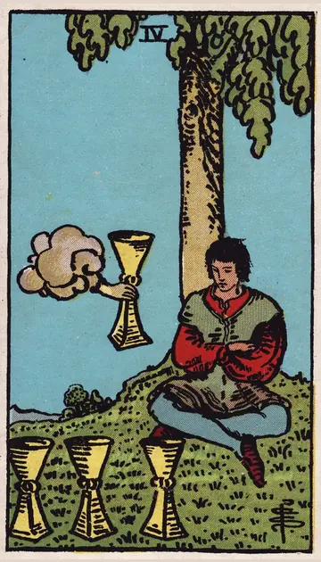
カップの4 カップの5
カップの5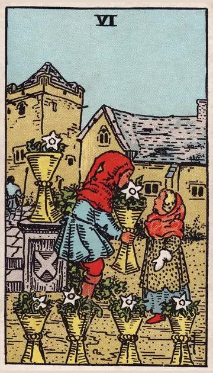
カップの6 カップの7
カップの7 カップの8
カップの8 カップの9
カップの9 カップの10
カップの10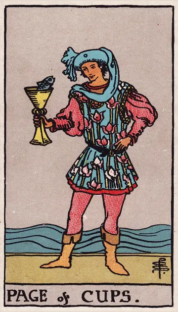
カップのペイジ カップのナイト
カップのナイト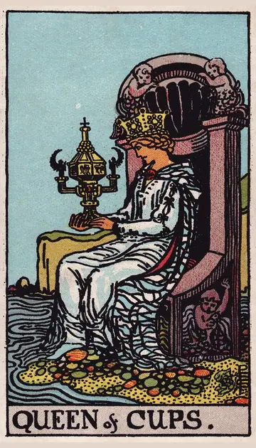
カップのクイーン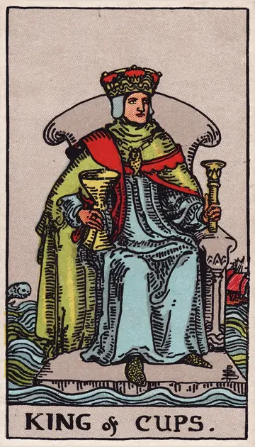
カップのキングソード
ソード（剣）は、風のエレメントに対応するとされ、考え・言葉・決断・悩みを表します。
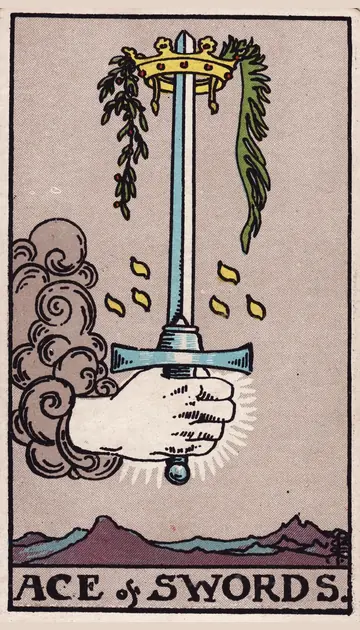
ソードのエース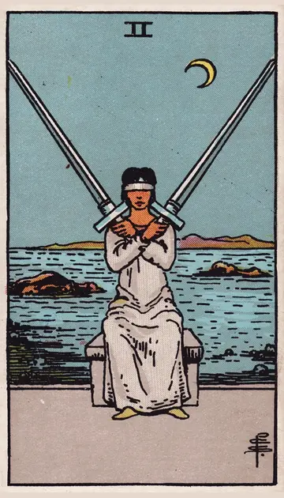
ソードの2 ソードの3
ソードの3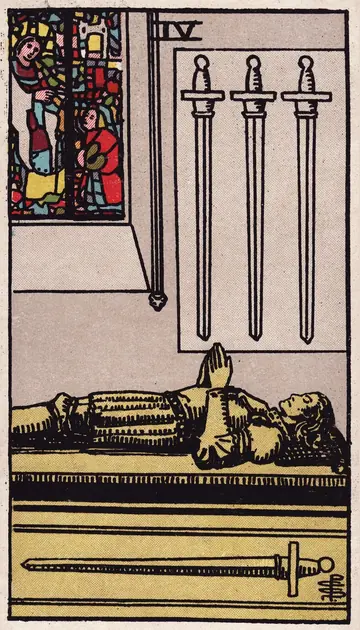
ソードの4 ソードの5
ソードの5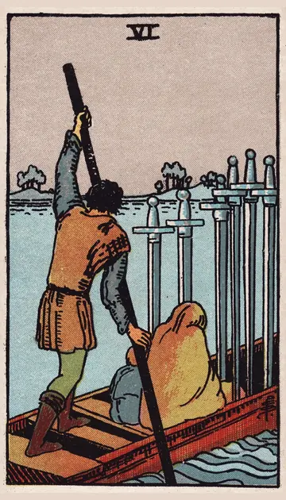
ソードの6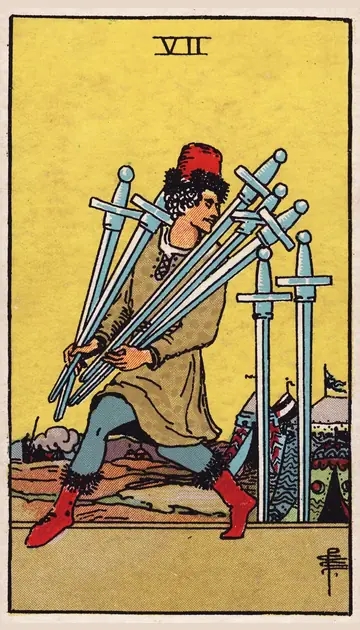
ソードの7 ソードの8
ソードの8 ソードの9
ソードの9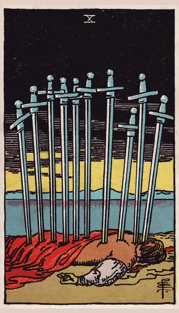
ソードの10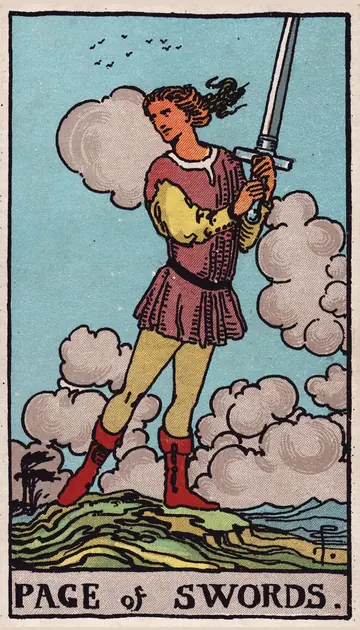
ソードのペイジ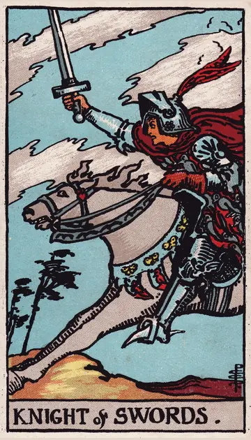
ソードのナイト ソードのクイーン
ソードのクイーン ソードのキング
ソードのキングペンタクル
ペンタクル（金貨）は、地のエレメントに対応するとされ、お金・仕事・体・暮らしなど形あるものを表します。
 ペンタクルのエース
ペンタクルのエース ペンタクルの2
ペンタクルの2 ペンタクルの4
ペンタクルの4 ペンタクルの6
ペンタクルの6 ペンタクルの9
ペンタクルの9 ペンタクルの10
ペンタクルの10 ペンタクルのクイーン
ペンタクルのクイーン